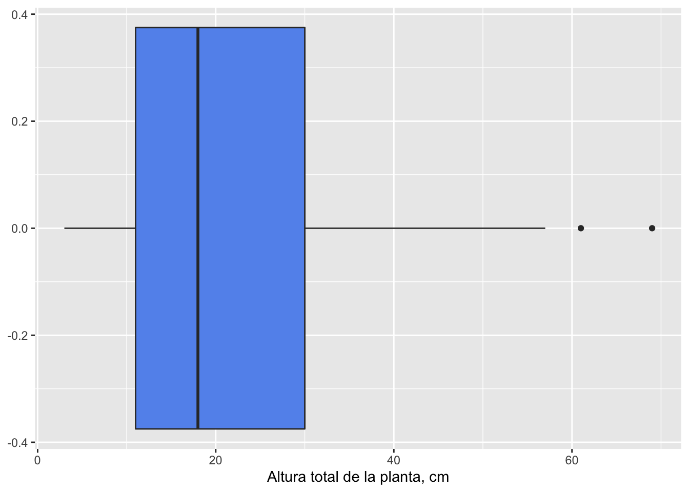

Estadísticas Descriptivas
1.4.Estadísticas Descriptivas: Medidas de la Tendencia Central y de Dispersión de los Datos
Al medir alguna característica (variable) en individuos de una población (o muestra generalmente), usualmente encontraremos que hay diferencias en los valores obtenidos. En esta sección del curso conoceremos algunas maneras de encontrar medidas de la tendencia central de las variables, y de la variación entre los individuos.
1.4.1.Parámetros Poblacionales y de la Muestra
Objetivo
Diferenciar parámetros y estadísticos, en el lenguaje de las estadísticas
Con las mediciones que realizamos en una muestra, podemos calcular algunos aspectos de la tendencia central y variación entre individuos; estos valores se denominan estadísticos, y permiten estimar los valores de la tendencia central y la dispersión en la población, los que en este caso se denominan parámetros poblacionales.
Parámetros y estadísticos
A continuación una lista de algunos parámetros y estadísticos de uso común:
medida parámetro estadístico media \(\mu\) \(\bar X\) mediana \(\theta\) \(M\) varianza \(\sigma^2\) \(s^2\) desviación estándar \(\sigma\) \(s\) proporción \(p\) \(\hat p\)
1.4.2.Medidas de la Tendencia Central
Objetivos
Conocer los estadísticos que describen la tendencia central
La tendencia central de una muestra (o población) es el valor alrededor del cual se agrupan las observaciones o mediciones de una variable. Existen varios estadísticos para describirlas, y su selección depende del tipo de variable y la distribución de los datos.
Proporción
Se refiere a la fracción de individuos o casos en una muestra, que tienen alguna característica (o nivel de una variable categórica).
Si x es el número de observaciones de interés y n el tamaño de la muestra, entonces la proporción observada será: \[\hat p = \frac{x}{n}\] A menudo las proporciones se convierten a porcentajes (%) multiplicando por 100.
Ejercicio
A partir de los resultados de una encuesta vamos a calcular la proporción de estudiantes que viven en Humacao.
# individuos que cumplen la condición
x <- 7
# total de individuos en la muestra
n <- 29
# proporción
p <- x / n
# porcentaje
pciento <- p * 100
# resultados
resulta <- data.frame(x, n, p, pciento)
colnames(resulta) <- c("en Humacao", "Total", "proporción", "%")
resulta## en Humacao Total proporción %
## 1 7 29 0.2413793 24.13793Moda
Es otra manera de describir la tendencia central de una variable categórica. La moda es el valor más común de unos datos. Para determinar la moda no es necesario un cálculo especial, la moda se identifica; una manera de obtenerla es observar una gráfica de barras de frecuencias o un histograma (para variables continuas). A continuación tiene una función para identificar la moda en números y caracteres.
Ejercicio
Moda de los datos de edad de la clase.
¿Cúal es la diferencia entre moda y proporción?
# tomado de: tutorials-point
# crear la función
getmode <- function(x) {
uniqv <- unique(x)
uniqv[which.max(tabulate(match(x, uniqv)))]
}
# vector con números
v <- c(2,1,2,3,1,2,3,4,1,5,5,3,2,3)
# identificación de la moda
result <- getmode(v)
print(result)## [1] 2# vector con texto
charv <- c("o","it","the","it","it")
# identificación de la moda
result <- getmode(charv)
print(result)## [1] "it"Mediana
En una lista ordenada de valores numéricos, la mediana es el valor que divide de manera igual, por arriba y por abajo, la cantidad de valores de la variable.
Cuando el número de datos es impar, el valor de la mediana es uno de los datos, aquel que divide en partes iguales la secuencia de datos. Cuando el número de datos es par, los dos valores centrales se promedian, para obtener la mediana:
caso 1: 2, 2, 2, 3, 3, 4, 4 M = 3
caso 2: 2, 2, 2, 3, 4, 4, 4, 4 M = 3.5
caso 3: 2, 2, 2, 3, 4, 10, 100, 1000 M = 3.5
# mediana caso 1
mediana1 <- median(c(2, 2, 2, 3, 3, 4, 4))
# mediana caso 2
mediana2 <- median(c(2, 2, 2, 3, 4, 4, 4, 4))
# mediana caso 3
mediana3 <- median(c(2, 2, 2, 3, 4, 10, 100, 1000))
medianas <- data.frame(mediana1, mediana2, mediana3)
colnames(medianas) <- c("Caso 1", "Caso 2", "Caso 3")
medianas## Caso 1 Caso 2 Caso 3
## 1 3 3.5 3.5Media
La media es el promedio aritmético de un conjunto de datos numéricos. Si realizamos la medición de todos los individuos de una población y calculamos la media, obtendremos la verdadera media poblacional (\(\mu\)). Si las mediciones son en una muestra de la población y calculamos la media, obtendremos la media muestral (\(\bar X\)).
La fórmula de la media, para un conjunto de valores \(x_1,\ x_2,\ x_3,...,\ x_n\), será:
\[\bar X = \frac{\sum x}{n}\]
es decir, la suma de todos los valores, dividido entre la cantidad de valores de la muestra.
La función de R para calcular la media en mean(x), donde x es un vector de datos de una variable.
Ejercicio
Calculo de la media de la edad de la clase.
Media ponderada
En algunos casos los datos numéricos discretos están organizados como una distribución de frecuencia (ver Figura 7 del tema Gráficas y Tablas). En estos casos usamos lo que se conoce como una media ponderada (weighted mean), y su fórmula es la siguiente:
\[\bar X_w = \frac{\sum fx}{\sum f}\]
La media ponderada se usa cuando diferentes medidas tienen diferentes pesos o niveles de importancia. Un ejemplo conocido es el cálculo de “promedio” o GPA.
Ejemplo
J. Picachú tiene las siguientes notas luego de su primer año en la universidad:
## # A tibble: 14 x 3
## curso creditos nota
## <chr> <dbl> <chr>
## 1 B01 4 B
## 2 B02 4 A
## 3 M01 3 F
## 4 M02 3 A
## 5 F01 3 B
## 6 F02 4 A
## 7 Q01 4 D
## 8 Q02 4 B
## 9 H01 3 A
## 10 H02 3 B
## 11 L01 3 B
## 12 L02 3 B
## 13 S01 3 C
## 14 S02 3 BPara usar el promedio ponderado primero debemos calcular la cantidad de créditos por nota (f):
## # A tibble: 5 x 3
## nota f valor_nota
## <chr> <dbl> <dbl>
## 1 A 14 4
## 2 B 23 3
## 3 C 3 2
## 4 D 4 1
## 5 F 3 0Ahora podemos calcular el promedio ponderado, o GPA para este caso:
GPA <- sum(frecuencia$f * frecuencia$valor_nota) / sum(frecuencia$f)
GPA## [1] 2.87234Comparación entre la moda, la mediana y la media
Según sea la distribución de frecuencias de los valores de una muestra, la moda, la mediana y la media podrán estar muy cerca o separadas una de otra.

Figura 1. Histograma mostrando una distribución simétrica de la frecuencia de valores de los datos.

Figura 2. Histograma mostrando una distribución asimétrica o sesgada de la frecuencia de valores de los datos.
1.4.3.Medidas de Dispersión
Objetivos
Obtener medidas para evaluar la variación de los datos alrededor de la tendencia central
En algunas situaciones puede ser más importante conocer las variaciones de las medidas con respecto al valor de la tendencia central, que esta misma. En el manejo de la diabetes, las variaciones diarias en la concentración de azúcar en la sangre son más importantes que su promedio.
A esta variación en las medidas de las observaciones alrededor de la media se la conoce con el término dispersión. Vamos a revisar las medidas de dispersión más comunes en estadística.
Rango o ámbito
El rango (en castellano puede llamarse también ámbito o alcance) es la diferencia entre el valor más grande y el más pequeño en los datos de una muestra.
Ejemplo
Con los datos de Melocactus intortus vamos a calcular el rango de los datos de la altura total de la planta.
# leer los datos
melocactus <- read.csv("./data/melocactus.csv")
# valor máximo
LImax <- max(melocactus$alturatotal)
# valor mínimo
LImin <- min(melocactus$alturatotal)
# rango
Rango <- LImax - LImin
resultados <- data.frame(LImax, LImin, Rango)
resultados## LImax LImin Rango
## 1 69 3 66El valor del rango está muy influenciado por los valores extremos o outliers, por esto el rango es solo una medida de los posibles valores que puede tener una variable, pero no una buena medida de la dispersión en muchos casos.
Percentilas, cuartiles y sus distancias
Cómo vimos anteriormente, la mediana divide los datos de tal manera que la mitad de los valores entán por debajo de su valor, y la otra mitad sobre ese valor. Podemos dividir los datos en conjuntos compuestos por proporciones diferentes a 0.5 (50%), y a estos valores de los datos que marcan esas divisiones se les denomina percentilas; la mediana sería la percentila 50%.
En las estadísticas descriptivas usualmente se utilizan las percentilas 25% y 75%, para medir la dispersión de los datos, y a estas y a la mediana (percentila 50%) se les denomina cuartiles (primero, segundo (mediana) y tercer cuartiles). Las percentilas 5% y 95% son también muy usadas para describir los datos que están muy por debajo o muy por encima de la tendencia central.
Ejemplo
Con los datos de Melocactus intortus vamos a calcular percentilas de los datos de la altura total de la planta.
# leer los datos
melocactus <- read.csv("./data/melocactus.csv")
# cálculo de percentilas
summary(melocactus$alturatotal)## Min. 1st Qu. Median Mean 3rd Qu. Max.
## 3.00 11.00 18.00 21.93 30.00 69.00# otras percentilas
quantile(melocactus$alturatotal, c(0.05, 0.90, 0.95))## 5% 90% 95%
## 6 45 48Gráficas Box & Whisker
La representación gráfica de la dispersión, medida con cuartiles se puede hacer utilizando la gráfica Box & Whisker (caja y bigote).
library(ggplot2)
ggplot(melocactus, aes(x=alturatotal)) + geom_boxplot(fill="cornflowerblue") +
labs(x = "Altura total de la planta, cm")
Figura 3. Gráfica de Box & Whisker para la altura total de la planta (cm), a partir de los datos de Melocactus intortus en el Bosque de Guánica.
En esta gráfica la línea dentro de la caja representa la mediana (segundo cuartil, percentila 50%), el borde izquierdo de la caja es la percentila 25% (primer cuartil), y el borde de la derecha el tercer cuartil (percentila 75%). Las puntas de los bigotes se calculan restando al valor del primer cuartil y sumando al del tercer cuartil, 1.5 veces la distancia intercuartil (\(Q_3 - Q_1\)), y localizando el dato con valor mínimo y máximo correspondiente, dentro de esos límites. Estos valores corresponden, aproximadamente, a la percentila 10% y 90%, respectivamente.
Gráfica de frecuencia acumulada
Otra manera de visualizar la ubicación de las percentilas y la mediana es usar una gráfica de frecuencia acumulada de los datos.

Figura 4. Frecuencia acumulada de valores de la longitud de peces (mm). Las líneas verticales indican los valores de longitud, en el eje x, del primer cuartil (25% de los valores), de la mediana (50% de los valores) y del tercer cuartil (75% de los valores)
Varianza, desviación estándar y error estándar
Ahora consideraremos algunas medidas de la dispersión alrededor de la media. De manera intuitiva podemos sugerir que una medida de dispersión es la diferencia entre cada valor (\(x_i\)) de nuestra muestra y la media de la muestra (\(\bar X\)): \[d = (x_i - \bar X)\] y que la suma de estas diferencias (\(\sum (x_i - \bar X)\)) será una medida de la dispersión. Sin embargo, podemos probar, por la misma definición de media, que esta sumatoria es igual a 0, ya que los valores negativos y positivos se cancelan. Pero si elevamos al cuadrado cada diferencia, esto no ocurre y podemos definir la dispersión total como la suma de cuadrados de las diferencias (SS), una cantidad muy importante en estadísticas y que se representa: \[SS = \sum (x_i - \bar X)^2\] SS mide la dispersión total, es decir que si tenemos más valores de la variable medida, tendremos más variación, y no serían comparables medidas de dispersión entre muestras de diversos tamaños. Para normalizar (estandarizar) está cantidad, se divide entre el tamaño de la muestra menos 1 (ajuste para evitar sesgo, según la teoría estadística), y tenemos entonces lo que se conoce como la varianza:
\[s^2 = \frac{\sum (x_i - \bar X)^2}{n-1}\]
Para fines prácticos, es más común usar la raíz cuadrada de la varianza, llamada desviación estándar (s), y así las unidades de la tendencia central y la dispersión se expresan en las mismas unidades de medición.
La desviación estándar es una medida de la dispersión alrededor de la media en una muestra, pero podemos también considerar el caso en que tomemos un número grande de muestras de la misma población, y queremos conocer una medida de la dispersión de los valores de las medias de ese conjunto de muestras; en este caso se usa el error estándar como estimador de esa cantidad:
\[s_{\bar X} = \frac{s}{\sqrt n}\] dónde n es el tamaño de nuestra muestra, y s su desviación estándar. En términos prácticos este valor representa una medida de la precisión de nuestras mediciones, la cual aumenta al disminuir el error estándar. Esto justifica, en parte, la necesidad de tener muchos datos en una muestra.
Coeficiente de variación
Los valores anteriores de medidas de dispersión, son comparables entre muestras de la misma variable, sujetos o casos y unidades de medición, pero dejan de serlo cuando los grupos o variables medidas son muy dispares o tienen unidades diferentes. En estas situaciones es conveniente el uso del coeficiente de variación (CV):
\[CV(\%) = \frac{s}{\bar X} * 100\] Ejemplo
En la siguiente tabla se ilustra la utilidad del coeficiente de variación:
Masa Corporal en kg
| Estadístico | Ratón | Elefante |
|---|---|---|
| \(\bar X\) | 0.0125 | 1240 |
| s | 0.0072 | 626 |
| CV | 57.6 | 50.4 |
1.4.4. Método para calcular tendencia central y medidas de dispersión en R
Hay varias maneras de calcular los estadísticos de la tendencia central usando R, a continuación usaremos una que permite calcular varios de ellos en los datos de altura total de la planta (cm) de Melocactus intortus, para grupos separados por un factor (estado: Enfermos, Saludables, X muertos).
# leer los datos
melocactus <- read.csv("./data/melocactus.csv")
# activar paquete doBy
library(doBy)
library(htmlTable) # para tablas elegantes
descriptivas <- summaryBy(alturatotal ~ estado, data = melocactus,
FUN = function(x) { c(media = mean(x), var = var(x), de = sd(x), es = sd(x)/sqrt(length(x)), CV = (sd(x)/mean(x))*100) } )
colnames(descriptivas) <- c("estado", "media", "varianza", "desv. est.", "error est.", "CV%")
txtRound(descriptivas, 2) #redondeo## estado media varianza desv. est. error est. CV%
## 1 E 21.93 222.23 14.91 2.87 67.99
## 2 S 23.04 241.01 15.52 1.79 67.38
## 3 X 20.00 121.29 11.01 1.68 55.06